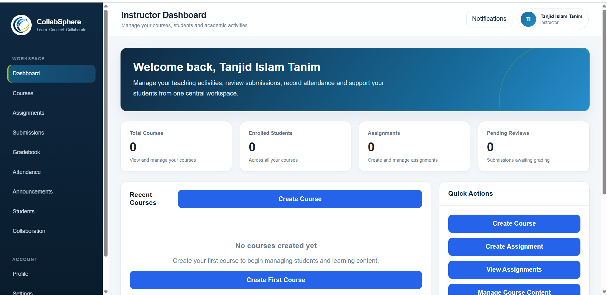

The challenge
Academic workflows often span several tools. CollabSphere explores bringing the course lifecycle into one consistent interface for instructors and students.
A shared learning workspace for instructors and students, from course enrolment to feedback and collaboration.

A role-based learning management system with course materials, assignments, submissions, grading, attendance, announcements, collaboration and notifications.
Academic workflows often span several tools. CollabSphere explores bringing the course lifecycle into one consistent interface for instructors and students.
A role-based learning management system with course materials, assignments, submissions, grading, attendance, announcements, collaboration and notifications.
These features are grounded in the repository README and implementation, rather than a hypothetical product roadmap.
Create courses, manage materials, grade submissions and track attendance.
Enrol with course keys, access resources and submit assignments.
Assignment submissions, grading, feedback and published results.
Announcements, collaboration spaces and in-app notifications.
PDO prepared statements, password verification and role checks.
Profiles, settings and student membership features.
How the main components fit together, with a short source-based example.
$query = $pdo->prepare(
'SELECT id, email, role FROM users
WHERE email = :email LIMIT 1'
);
$query->execute(['email' => $email]);Simplified excerpt of the actual login query. Authentication also uses password_verify and session handling.
Eight original screenshots taken from the locally developed PHP application. Click to inspect each image.
A simplified walkthrough of the project's core interaction.
Instructor sets up a course
Student joins with an enrolment key
Student uploads assignment work
Instructor grades and publishes results
Academic project context and the technical ideas worth carrying forward.
“Full-stack development is as much about connecting workflows and permissions as it is about building individual screens.”
Bachelor of Software Engineering · University of Wollongong Malaysia
Explore the repository, implementation and original project documentation.